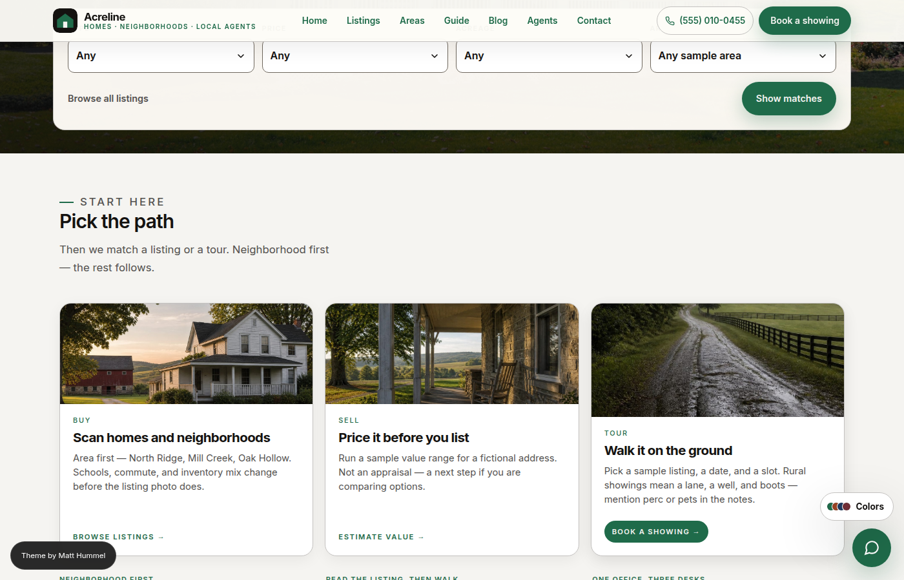
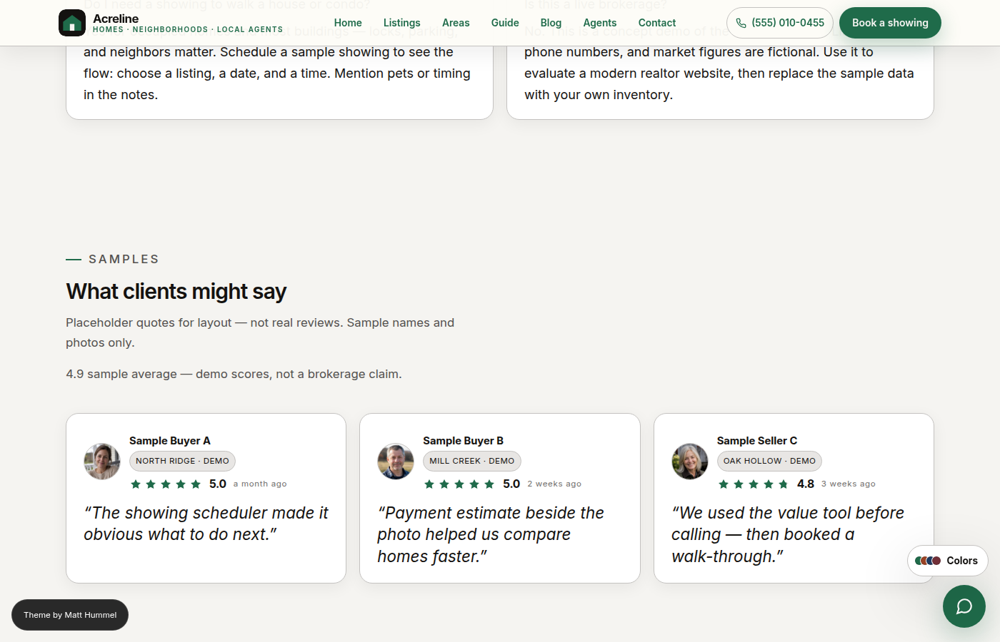
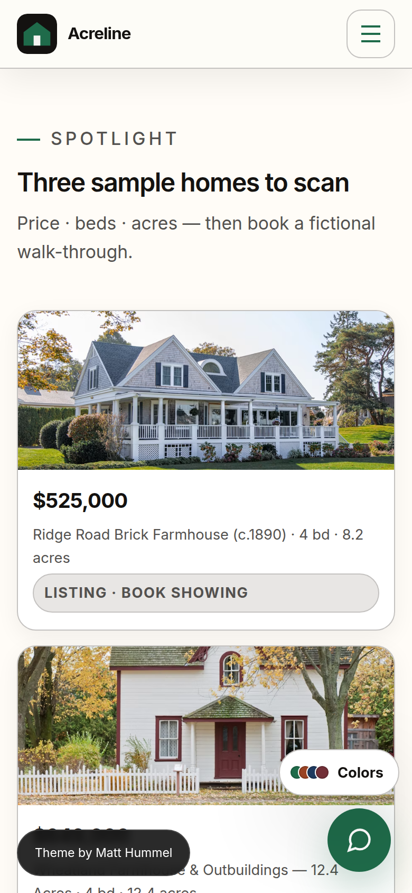
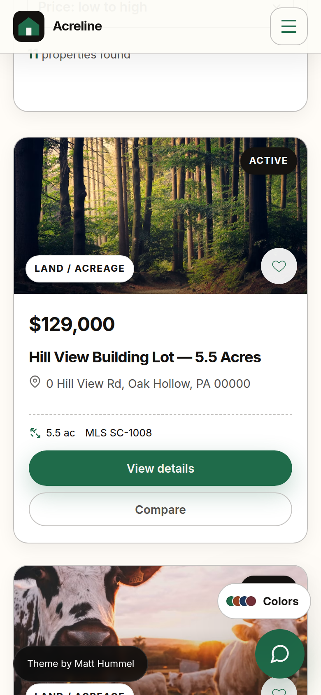
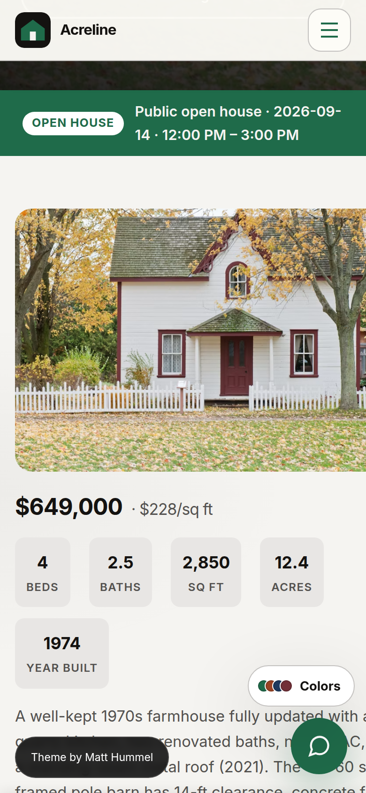
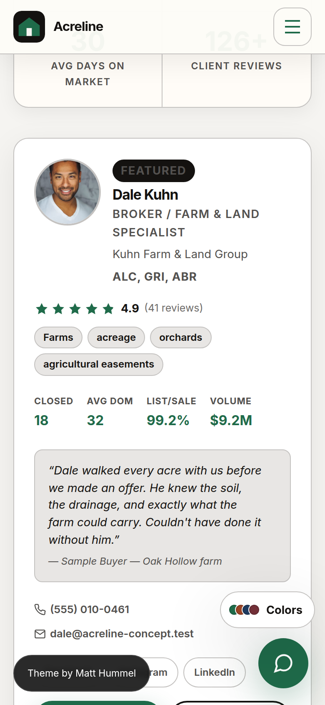
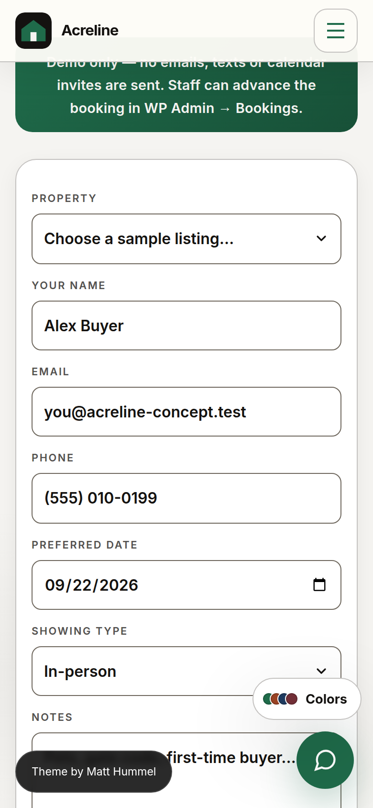
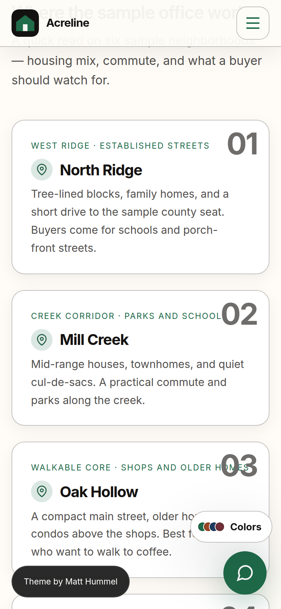

Theme documentation
What ThemeForest, TemplateMonster, Creative Market, and own-site buyers need to install Acreline, match the demo, and run an office without a plugin stack or a page builder. Open this index.html from the pack’s Documentation/ folder — reviewers look for a hub, not a single PDF.
acreline-*.zip. Upload inner acreline.zip in Appearance → Themes. Optional: acreline-child.zip, acreline-core.zip. Do not upload the outer pack into WordPress.
Start here
Install & setup
Upload, homepage, Customizer, custom fields, menus, demo seed, child theme, updates, translation, file map, FAQ.
Branding & logos
House mark, wordmark, Forest palette, how to swap the logo without editing templates.
Host & listing fields
PHP / WordPress versions, browsers, Gutenberg = No, paste-ready ThemeForest and TemplateMonster attributes.
Support
Where to get help, what to include in a ticket, what this theme does not do.
Sources & credits
Fonts, Sage/Acorn, original SVG marks, what is not bundled (Unsplash files, Freemius).
Changelog
User-facing history. Re-test notes after each zip.
Website compliance
Brokerage ID, Fair Housing, NAR if applicable, IDX slots, form consent, privacy URLs. Tools and a checklist — not legal advice.
Customizer
Identity, Compliance, eight color styles, header (including homepage hero motion), typography, social, removable footer credit.
Listings & bookings
Listing / agent / booking fields, ?listing_id=, Acreline Core.
Page templates
Home, listings, book, areas, guide, agents, contact, blog.
FAQ
Folder name, Gutenberg off, MLS, child theme, showing query string.
What shops look for
| Required plugins | None. Theme zip runs listings, agents, and showings. Optional Acreline Core keeps those types if you switch themes. No ACF, Elementor, or IDX plugin. |
|---|---|
| Page builder | Not used. Gutenberg optimized: No. Edit copy in custom-field metaboxes and the Customizer. |
| Demo content | Tools → Seed Acreline demo (preferred). WXR notes in Demos/. |
| Child theme | acreline-child.zip in this pack. |
| Documentation | This folder. WordPress.org parser file: readme.txt. |
| Sources / credits | sources.html and Licensing/CREDITS.md. |
| License | GPLv2 or later. No purchase-code lock, Freemius, or Envato nag. |
| WooCommerce / WPML / RTL | No / not tested / no. |
| Demo | acreline.matthummel.com |
| Author | Matt Hummel |
Screenshots
ThemeForest extra item images from the seeded concept site — content areas (grids, cards, forms), not hero-only crops. Theme thumbnail in wp-admin is screenshot.png inside acreline.zip (1200×900). Phone captures are in the same folder (m-*.png).




Mobile





